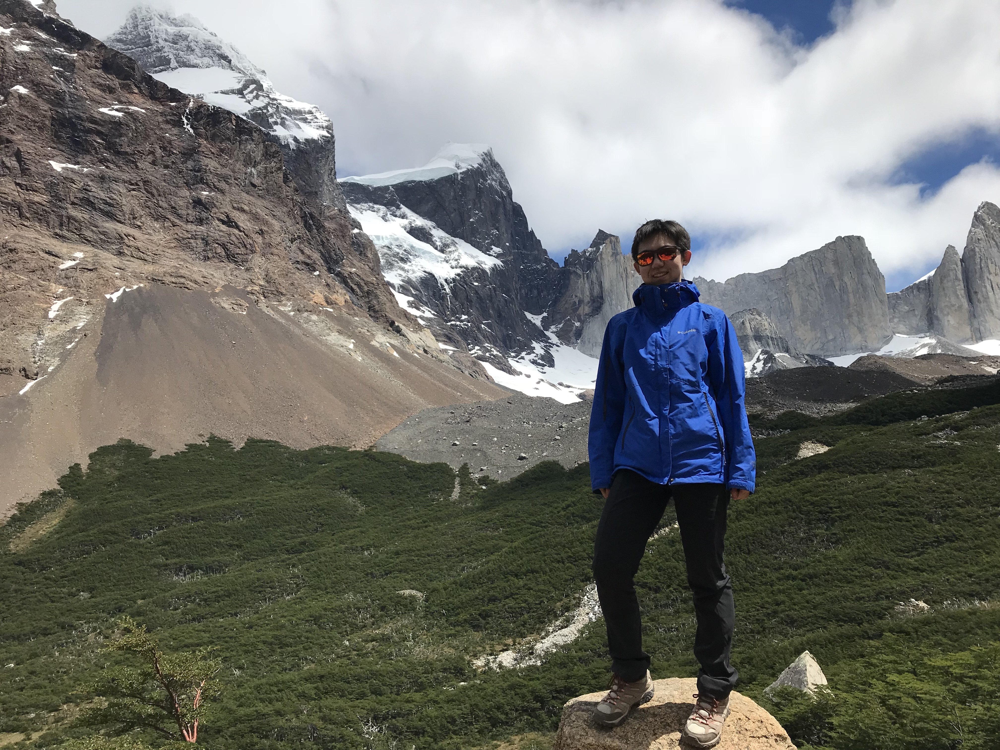
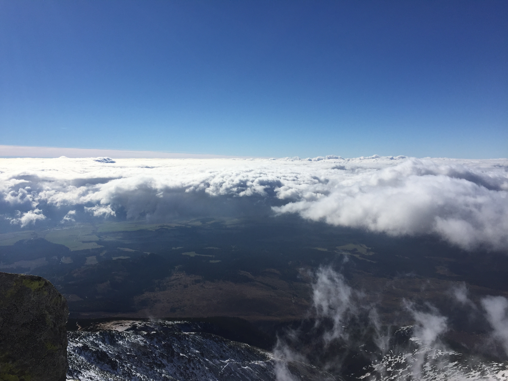
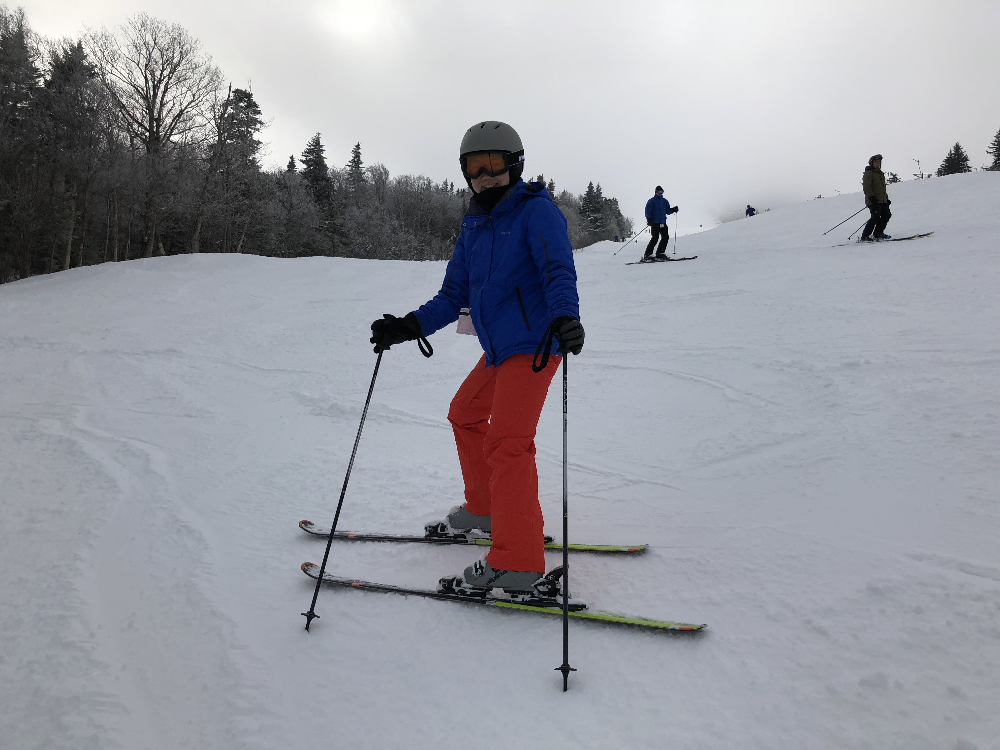
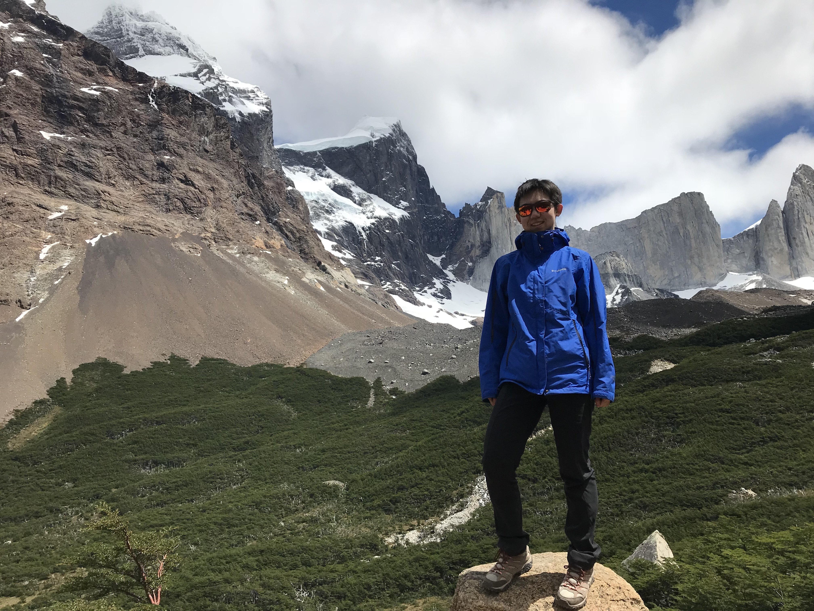
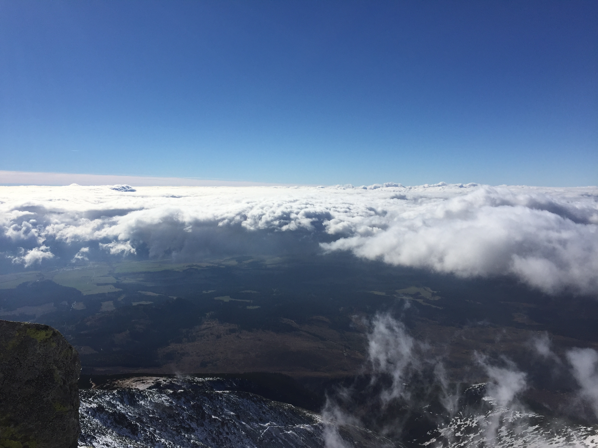

- Rock climbing

Farley ledges, MA. - Backpacking

Torres Del Paine, Patagonia, Chile
Mt. Krivan, Slovakia - Skiing

Killington, VT
| Fun facts |
|---|
| Outdoor activities | |
|---|---|
|  Torres Del Paine, Patagonia, Chile |
 Mt. Krivan, Slovakia |